Will be updated as raid progresses. Feel free to post corrections and/or details missed/not included yet.
Please don't false report a raid guide just because it helps more people clear Contest mode (100k+ guardians and counting!). I can understand if it's because this post might be too in depth/detailed to the point of overextended, but hating a guide because it helps people is weird. Be better.
I'm going to make a backup copy of this thread
on my own page, since having issues with mod approvals may interfere with those that are
seeking help. WE ESCAPED MOD JAIL YIPPEE. Still keeping the backup just in case it happens again.
Welcoming any support to help explain ANY of the encounters as I am a little bit lost myself.
Will be refreshed once every hour (or as close as possible to that timeframe) for more information.
edit 2: site is slowed down due to traffic, but I'm going to try and gather information as much as I am able to.
edit 3: added imgur links for encounter maps.
edit 4: updated explanation for Macrocosm with new graphs.
edit 5: updated with Triumph details. **Need help with figuring the Challenge conditions for encounters for Triumphs.**
As usual, SPOILERS ARE BELOW.
ohhhh yeahhh it's RON TIME
Must complete the Lightfall Campaign.
Contest Mode is active for 48 hours.
Players are capped at 20 Power below each encounter. 1780 is the max Power.
Roen
Osiris
Punz
Kai
SK
Grangalf
no 4peat sadge oh well
On the way to the second encounter, there's an area where psions are shooting at you from three entrances high above. The secret chest is in there after killing the tormentor in the area.
credits to u/Dj_Nu12
Second chest is in the second jumping puzzle. Turn around at the stair area. There is the darkness switch at the end of the jumping puzzle opening the second chest's door. It can be found by jumping around the outside before going into the room with the door leading to the stairs.
credits to u/wsoxfan1214
Open the locked door for secret chest #2 by shooting a switch to the left and down from the door:
credits to u/Conkerkid11
So once you reach all the way up past the staircase, and you are on the roof, go outside and look down. There's a button. Hit it and go to the front of the temple on the roof, and the chest will be in there.
credits to u/InsaneYoshiii for this explanation
special credits to u/hparamore for site with infographic and maps (currently WIP and interactable, please keep it clear and civilized)
Site is currently having issues from heavy traffic, imgur album version also available here.
OPENING:
Players will spawn in and begin to traverse toward the first encounter. Nothing much was noted in this area besides the scenery and a symbol(?) on the high gate at the beginning. Will be updated more if necessary.
Added a secret puzzle section at the bottom of the thread.
CATACLYSM:
Map: https://i.imgur.com/9GjCXyo.png
Map (Alternate) by pryanie#2536: https://i.imgur.com/IxbmUBg.jpeg
First encounter starts after shooting the mini Traveler orb/ball that is in front of the rally banner. The objective is to transfer the orb from one side of the arena to the other by passing it through nodes, or spirals, in the arena. The person within the aura of the orb that shoots it will be given a buff, "Field of Light" (Buff cooldown is ready whenever you see the aura around the ball).
The entire fireteam will be given a debuff timer, "Sweeping Terror", which is essentially a wipe mechanic. Enemies will start spawning, including Barrier Champion Cabals and 2 Psions in their bubbles. Killing these Psions will then spawn a Tormentor, which is required to be killed in order to extend Sweeping Terror's timer and also to spawn the next Darkness Spiral nodes, which alternate spawn sides.
The Traveler ball directs you to a darkness spiral (node) where a little orb will spawn in the spiral. If you have the buff it will be consumed and it will create another Traveler ball at the initial plate/spawn, which will then emit a light arrow/pointer that leads you to another spiral. In order to make the next node appear, you will need to kill the Tormentor that spawns. Repeat until "His hatred halts" and another starting point will appear to the right of the initial starting location.
Additional tips for encounter: Break into 2 teams, 2/4 (Team 1 should be 2 people, team 2 is the remaining 4). Team 1 is the Linker/Gardener team which uses the light buff to connect the trees together. Team 2 is a roaming death squad that needs to punch psions and kill tormentors as fast as possible. Once Team 1 has finished connecting 4-5~ nodes then the timer stops. If a tormentor is alive leave it up until the next timer for more time. Ad clear in the downtime. Repeat 4~ times and you are done.
After the encounter is finished, proceed through the opened path and climb the white roots (of nightmares) to reach the second encounter.
At the gap, shoot the Resonance node (same as Vow encounters) to activate the booper (you WILL be flung).
SCISSION:
Map: https://i.imgur.com/toIjVVy.png
Similar mechanics to the first Cataclysm encounter, moving light from node to node, but now there is a light side and a dark side. You will split into 2 teams of 3 and rebuff in the aura with your group and go where the balls point. Shoot ball of light on either side of arena to get the Field of Light buff. An orb of darkness on either side also has to be shot, this will remove Field of Light. Imminent Expulsion timer wipes you cause it pushes you off. After all orbs are cleared on both sides of arena the Imminent Expulsion debuff will be removed (wall mechanics) & minibosses spawn on both sides. The tricky part is it goes back and forth over the gap. There are also Centurions with auras that only people with that buff can kill, so be careful and stay buffed.
Once the first level is done, the launcher at the far end of the room will boop you to the second level where you do the same thing. You must clear Centurions to be able to boop up. Rinse & repeat for 3 levels.
Boopers (we're keeping this terminology) are kinda dangerous, you have to make sure you're all the way back against them when you activate otherwise it can send you straight up OR send you directly into the wall on the other side. (You can wellskate or just use swords to help with movement adjustments to go across.)
u/DrDukeMD offers his team's sketch of the 3 floors for the encounter:
*** u/duffking shares their strat for this encounter:
2 teams of 3, allocate a runner and two killers. The runner connects the dots by themselves.
After each dunk:
- Runner returns to the buff spawn
- One of the killers returns to the buff spawn to refresh their buff (for killing the shield)
- One of the killers remains on add control
Just alternate which killer returns each time, this way someone always is able to kill the shields and someone is always on add control. You have more than enough time to do 5 plates as the 2 that are on the same side as you start are always really quick to reach.
** If you get soft-locked at the end and cant get buffs, use colony. Run into them and shoot at your feet to bypass the shields. (HOW THO?)
* Goofy silly off-topic detail: If you're still on the checkpoint for the
second encounter and then go back, you will see an A-posing Tormentor somewhere on the map (unsure of the
exact location). Probably related to the 2nd secret chest. Some are saying him being immune makes
them unable to get the 2nd secret chest(?). Unsure about this.
Image 1 Image 2 Image 3 Image 4
it's confusing as it's easy to accidentally cause a disrupt and think it's something else doing it but I'm fairly sure it's this: Disrupt occurs when a player is holding the buff and is not within the aura you have to stand to get the buff, and another player grabs the buff. If you want multiple players to have the buff, they must grab it at the same time.The disrupt stops you from grabbing the buff for a few seconds.The psions/tormentor and the majors in the second encounter don't disrupt you, however their presence appears to stop you dunking the buff at the plates.We were confused so we tested it out during the second encounter and it seemed pretty reliably to be caused by the above. Happy to eat my words if that's not the case though.
credits to the Figma editing team
JUMPING PUZZLE:
idk just do it. also there's a chest (refer to Secret Chest #2).
Every member of the fireteam must be near the doors for it to open. Credits to u/PT153 for pointing it out.
Added u/Sirspen's guide on clearing the boopers/jumping pads
Apparently, you can get trapped after going through all the jumping puzzle and before 3rd encounter. If that happens to your team, make sure everyone leaves and have the host stay to progress the zone.
MACROCOSM:
Maps: https://i.imgur.com/FwAaOYU.png
Map 2 (Alternate) made by pryanie#2536: https://i.imgur.com/zrtybGK.jpeg
new graph made by u/SCOdoubleT16 (A Frothy Coffee#4596)
new graph 2 (alternate) made by u/AdAffectionate5426 (also very good)
room overlay made by u/TheDanger2468 (helps with corresponding positions in the encounter room)
temporary sketch from Breeze#0007
Room is split into 3, with a center area, a left, and a right side. Both the left and right sides contain 6 planets respectively, both in the shape of triangles. Each planet is located at the tip of a triangle, and each planet has a random polarity of Light or Dark. The left side will always start with 4 Light and 2 Dark, and the right will be 4 Dark and 2 Light.
When you start the encounter, you'll have to clear ads out in the middle until Centurions spawn. After you kill the Centurions, 4 Colussus will spawn, one on each triangle. When you kill a Colussus on your side, you'll be able to see the "polarity" of your side's planets (which ones are Dark and which ones are Light).
The point of the encounter is to shift all of the Darks to the right side, and the Lights to the left side. Starting on the lower triangles, make the call for which ones are the odd ones out, and then 1 person from each side will walk underneath the planets when the Colossuses are killed, there will be these buffs that you can pick up underneath each of your side's planets. Your job is to take the buff of the planet that is the odd one out and "carry" the planet to the opposite side.
It is important to note that only the person who kills the Colossus can see the polarity of planets, and only their side's polarities, and can only take from their side's planets (i.e if you were on right and you killed a Colossus on the right side, you wouldn't be able to see anything on the left side). You have 3 rounds of Centurions to do this correctly, so you could technically mess up once. You could have 2 people start on the bottom triangle, call out their odd ones, and then take the odd ones to the opposite odd ones. When you both insert the buffs, the planets will physically move and switch places
Make sure that it looks like this. Once it looks like the image, you can begin preparing for DPS phase. Another Centurion and Colossus will spawn as per usual, but when you kill this Colossus you'll also be able to see the center planets' polarities. This is an example, but it can be random. As far as we know, there will ALWAYS be at least one of each, so you should just call out, in this example, "Dark left" because we know the other two would be light.
Once this call has been made, you do the same thing as before with the planet "buffs" underneath the planets, taking, for the above example, any 2 Light planets and any 1 Dark planet and dunking them in the plates on the ground below the planets. If done right within the allotted time, the planets will combine and you will begin the damage phase.
The boss will either be orange or white. If it's white, stand in the white plate and do damage. If it's orange, stand in the orange plate and do damage. The boss will only change to a color that one of the plates is, and when you are finished with a plate it will no longer be usable.
Once you do this enough times, you will reach final strand, where all plates will be orange and you are free to damage from wherever. The plates don't disappear, you just stick one and melt it.
^^^mega shoutout to u/Wind__D (@Breeze#0007) for helping me with this section^^^
** The crystal in the encounter:
Respawns the centurions if you need to retry the planet swapping, and
Starts damage if your team is standing on the correct plate
credits to u/travelers-unite
NEZAREC:
woo yeah it's nezarec
time
idk he does a backflip or two or something and then strands all over
you
Map: https://i.imgur.com/Tt8K62s.png (WIP)
Map 2 (Alternate) made by pryanie#2536: https://i.imgur.com/4cfrqJb.jpeg
Boss fight with Nezarec.
Similar mechanics to first and second encounter, have 1-2 people run around and connect nodes/seeds (Eager Edge sword helps). In order to start damage phase, you must chain the seeds/nodes on both sides from start to finish. While people are doing this, others should be shooting Nezarec's weak points (same as Rhulk). These crit spots/weak points could only be hit to extend the timer once for each spot. Once both shoulders and the chest are popped, he will flash either light or dark, signifying the type of wipe he will perform.
To delay the wipe, you must get the refuge buff matching the wiping element Nezarec is performing. For Example, if Nezarec flashes/emits a white wave after shooting his weak points, you must grab the Darkness Aura and bring it to an activated light node. Shooting the node will grant immunity to the wipe mechanic to all nearby players. (credits to u/userp17 for this section)
Stand on the platform (the final Light seed spot) in order to do DPS phase. Well there, don't move too much, and your team should be fine to do damage.
Another explanation for the Nezarec DPS position made by u/SkillSpree.(Correct Refuge Spark Type has to be determined by Mid Team while Nezerac is on the ground. NOT in his perched state.)
Another video showing node runner(s)' POV by u/goodm_n.
*Wipe timer is also permanently shorter(??) after the first phase of DPS (will need to verify).
Boss will need at least 2-3 damage phases. Also has a final strand (hehe).
a couple of proposed team setup has been Merciless/rocket(or LMG) or Thunderlords with catalyst, fairly consistent, do keep in mind.
You can survive Nezarec by shooting his shoulder to see a blast in either light or darkness. Once you know that, the player running the opposite type will have to go to an already captured node matching the type of the boss and shoot it to give your team a shelter buff when you step into it. After that, you can continue connecting the things until DPS.
E.g the second shoulder pop is orange, then the Light chain stops at node 4 for example, uses the buff to shot darkness node 1 or 2, behind the darkness aura node. Every player can step into it and get a darkness shelter buff to survive the wipe.
credits to u/trerobb for finding this (Link) (Confirmed by multiple teams to have worked)
Update tips for Final Boss
You can survive his wipe explosion!
When you shoot off his shoulders, he'll glow either Light or Dark for a secondUpon knowing this information, create either a Light of Dark Refuge!
Light Refuge needs to have the Dark runner shoot a completed Light PointDark Refuge needs to have the Light runner shoot a completed Dark Point(YOU MUST HAVE THE BUFF WHEN CREATING THE POOL)(The Refuge Zones can't be made on points where the buff needs to be grabbed from)
The Buff lasts for 15 seconds or infinite if you sit in the refuge pool
If you have the respective Refuge, you WILL survive his explosion and he'll reset back to the top where he started all over again.
credits to u/ZigsTheBrit for this
every time you wipe, Nezarec changes his encounter's mechanics
credits to Clevermech#2591 on the only joke that made someone laugh after being stuck 4 hours on Nezarec.
NEZAREC? MORE LIKE NETHERRACK. LOOK AT HIM HE'S ALREADY PLAYING THE PART HE LOOKS JUST LIKE IT.
credits to Maxxieel#0532 for this one
There are secret areas throughout the raid which might be related to getting the guaranteed red border on raid completion at the end of the last encounter(?).
The opening area also includes a light and dark seed/orb that can be shot at (has valid hitmarkers)credits to u/Kubiboi for the image and u/Fusion5432 for pointing it out.
u/Fusion5432: Seems those 3 “seeds” are like the hive code, pertaining on which seeds need to be connected in the rooms
u/kuebel33: The hidden area before the first encounter has 2 seed ball things on a plate each, and then 2 plates on different walls with the spirally stuff on it?We've managed to move one seed to one of the plates on the walls, but cant figure out how to move the other to the other plate on the wall.plates give flux of darkness and light refuge buffs.
u/roguishhh: Exploring the area in Root of Nightmare and found an open door to the side room before climbing the white tendril up. Leads to a staircase taking you down to a room with 2 energy panels and a closed door. Room
u/IDreamszZ: Secret puzzle 3rd room juste before boss encounter : 3rd room
**Highlighted Triumphs help permanently improve the drop rate for Conditional Finality, the Raid's Exotic Shotgun.
Root of Nightmares: Complete the “Root of Nightmares” Raid
Master Difficulty "Root of Nightmares": Complete the “Root of Nightmares” Raid on Master difficulty.
Horticulturist: Complete the “Root of Nightmares” Raid within the first 48 hours of release.
Living Nightmares: Complete all encounters in the “Root of Nightmares” raid without any member of your fireteam dying.**
Collective Consciousness: Complete Root of Nightmares with a full clan
System Shock: Complete Root of Nightmares with a full team of Arc subclasses.
Harbingers of Nothingness: Complete Root of Nightmares with a full team of Void subclasses.
Infernal Pain: Complete Root of Nightmares with a full team of Solar subclasses.
Crystallized Fear: Complete Root of Nightmares with a full team of Stasis subclasses.
Dream Weavers: Complete Root of Nightmares with a full team of Strand subclasses.
Classic Horror: Complete all encounters in "Root of Nightmares" with a fireteam made entirely of the same Guardian class.**
Terraformed Secrets: Loot all 2 hidden chests in the "Root of Nightmares" raid.
"Root of Nightmares" Lore Book Unlocks: Unlock the “Root of Nightmares” lore book.
Illuminated Torment: Complete the "Illuminated Torrent" challenge. ** (Only defeat Tormenters while you have the Field of Light buff) (ADDITIONAL TIP: You could have the other members of the team chunk the Tormentor down to low HP and THEN have the person with the buff kill it, should still complete the challenge conditions.)
Psionic Purge: In Cataclysm, defeat all Psions within 1 second of each other.**
Crossfire: Complete the "Crossfire" challenge. (Unsure, some predictions are either players that shoot one node must shoot the opposite node next, players who receive one buff must receive the opposite buff next, meaning the teams have to swap sides between floors) **
Shields Up: In Scission, do not defeat any attuned shielded combatants on a floor until both node chains are complete on that same floor.**
Cosmic Equilibrium: Complete the "Cosmic Equilibrium" challenge. (no idea, this has a lot of implications)**
Singular Orbit: In Macrocosm, a player cannot gain Planetary Insight twice in the same Planetary Shift.**
All Hands: Complete the "All Hands" challenge. (Predictions: Either each player can only shoot 1 light node and 1 dark node per phase, or all players in the fireteam have to acquire Nezarec's Hatred at least once before the DPS phase starts.) **
Synchronicity: During the final battle with Nezarec, activate both sets of nodes within 5 seconds of each other, for every activation, and complete the encounter.**
Final Nightmare: Complete all encounter challenges on Master difficulty.
this is my first time writing a guide (I don't even have the raid)
|  | Cataclysm | Scission | Macrocosm | Nezarec | |||||||||
| Weapons | 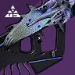 | Briar's Contempt | 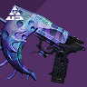 | Mykel's Reverence | Mykel's Reverence | |
Found Verdict | ||||||
|
Vision of Confluence | |
Praedyth's Revenge | |
Vision of Confluence | |
Fatebringer | ||||||
|
Corrective Measure | |
Vision of Confluence | |
Corrective Measure | |
Detestation Vengeance | ||||||
| Armor | Head | 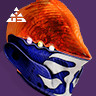 | 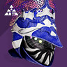 | 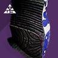 | |||||||||
| Arms | 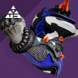 | 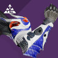 | 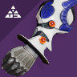 | ||||||||||
| Chest | 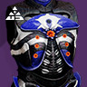 | 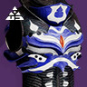 | 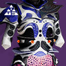 | ||||||||||
| Legs | 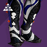 | 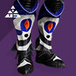 | 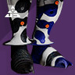 | ||||||||||
| Class | 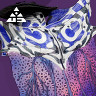 | 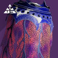 | 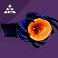 | ||||||||||